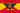

De: La Frikipedia, la enciclopedia extremadamente seria.
De: La Frikipedia, la enciclopedia extremadamente seria. De: La Frikipedia, la enciclopedia extremadamente seria.

|
Este artículo necesita ser ilustrado. Busca una afoto en nuestro depósito de imágenes o donde sea y ponla, pero que no sea pr0n, que se cabrea el señor del adSense y nos corta el grifo de los dólare. Y sin dólare no hay servidor... |
| De la serie conflictos armados: | ||||
| Guerras Napoleónicas | ||||
| ||||
| Lugar y fecha | Empiezan cuando Napoleón llega y es en Rusia, Espiña... En fin, no te mareo y sigue leyendo | |||
|---|---|---|---|---|
| Bandos | |
 Imperio Espiñol | ||
| Fuerzas | |
Tipos con escopetas de Playmobil | ||
| Comandantes | |
Muchos... (tantos que ni siquiera deberían salir) | ||
| Armas | |
piedras y ramitas | ||
| Bajas | Muertos: Más que todos los de los enemigos juntos Heridos: Igual que el de los enemigos juntos Desaparecidos: Menos que el de los enemigos juntos |
Muertos: puede que uno dellos sea el cubito de hielo de tu vaso Heridos: Ni uno(las heridas se cerraban al instante por el frío) Desaparecidos: Vete tú a saber cuantos(no tenían ni pa pipas ¿y crees que van a volver?) Muertos: Si los contamos no acabo ni mañana. Heridos: 8(sí, asín de simple) Desaparecidos:Ni uno(¿vivían en el monte y crees que van a desaparecer?) Muertos: 888881. Heridos: 999991 Desaparecidos: 0,000008 | ||
| Resultado | ¡¡Jódete, gabacho!! | |||
Las Guerras Napoleónicas fueron iniciadas por un conjunto de franchutes liderados por un tipejo amargao llamado Napoleón Buenafuente Bonaparte. Estas guerras se iniciaron debido a que en el pasado le hacían bullyng (osea, que le mangaban los bollos) en la academia militar, y por eso él quería hacerse el chulo y que ninguna nación vecina le mangara los bollos a su nación. Para ello levantó a un montón de burros tipos sin pantalones para que porculizaran a todas las naciones que pillaran de por medio.
Para ello Napoleón tenía un método infalible de invasión, el cual consistía en invitar al líder de la nación vecina a tomar un cafelito para luego porculizarlo repetidas veces hasta que no pueda sentarse en su trono y Napoleón entraba en palacio y se asentaba en el trono de otro pringao. Cuando el tipo ya fue porculizado estaba derrotado, el tipo ejecutaba uno de los mejores inventos de la historia: El enchufe o encasquetamiento en oficio bien pagado. El tipo colocaba de coca en el váter trono a un tiparraco de confianza (a su hermano, a sus hermanas, a sus generales...) conocido como "Quedate un tiempo, que más tarde vengo yo", término que ha evolucionado hasta denominarse calientapollastronos.
Todo empezó cuando en francia Gabacholandia el tiparraco este (léase Buenafuente Bonaparte) dio un golpe con el estado... Perdón, un golpe de estado y se puso la corona el mismo encima de su cogote(estando todo el mundo acostumbrado a que un señor vestido de blanco y con una vara mú larga te la pusiera encima... ¿que le verían a eso?). Después de eso el tipo decidió que si quería competir con Marina'Dor debía adquirir más terrenos, por lo que empezó a invadir territorios para montar ciudades de vacaciones para cada tipo de cliente por muy tiquismiquis que fuera. Para ello debía adquirir diversos tipos de territorios para que cada ciudad de vacaciones fuese única.
Articulo principal: Napoleón Bonaparte
Se dieron en un lapso de 10 años entre 1805 y 1815 en 5 guerras. Se les dio ese nombre por que desde el apogeo del Imperio Napoleónico a su caída los parlamentos y palacios de los jerarcas se llenaban de licor, borrachos,casinos,tabaco y mujerzuelas tanto por los franceses, sus aliados y los países en donde Napoleón ponía a sus hermanos y amigos como reyes en donde le daba su regalada gana; como por sus enemigos: los unos por la lujuria y el regocijo y los otros por la bronca y la pinche angustia. El borrachín mas celebre de esta época no fue Napoleón y ni siquiera su hermano Pepe Botella, sino el rey de Inglaterra Jorge III (el pobre se la venia chingando desde hace 40 años).
Se les conoce también como Guerras Napoleónicas o Guerras de Coalición.
En realidad no hubo movilización contra Francia pues esperaban reunir mas fuerzas pero Napoleón tomo la iniciativa e invadió Austria en la primavera de 1805 (creo yo). Pero para eso tuvo que pasar por mucho. El congreso francés recibió la notificación de Napoleón pero lo obligaron a consultarlo con el Oráculo.
Napoleón subió a la cima del monte Quiquirisquiaga en los Alpes franceses. El Oráculo le negó la petición pues temían que Europa se bañara en sangre. Napoleón, quien no había pasado por tantos pinches pedos para que al final le dijeran que no, ordeno a sus hombres matar a todos los miembros del Oráculo cosa que no le gusto nada al congreso francés que ya preparaba su dimisión. Pero Napoleón se les adelanto y ejecuto a los 500 miembros del congreso y los reemplazo por uno de sus batallones. Así que los asuntos legislativos de la nación quedaron en manos de 500 campesinos ignorantes, violentos y borrachos.
Ya en tierras austriacas los dos ejércitos se encontraron en el campo de Austerlitz y en la noche anterior a la batalla Napoleón, viendo que era superado en numero, levanto en euforia a sus hombres poniéndoles a ver la de “300” y al día siguiente cada francés se chingo a 2 austriacos y a un ruso. Austria y Rusia no tuvieron mas opción que rendirse y darle las nalgas a Napoleón quien sodomizo al emperador Francisco de Austria y al Zar Alejandro. La cosa se había calentado pero aun quedaba mucho que recorrer.
Después de la estrepitosa victoria de Napoleón contra Austria, los reyes de Prusia creyeron que podrían hacerle frente ellos solos junto con Sajonia y Baviera y Rusia se les ofreció como ayuda (eso creo). ¿Por qué no atacaron junto con Austria y Rusia? Nadie lo sabe y cuando Albert Einstein leyó eso en el hospital en donde esperaba su muerte, la mendiga duda le causo un infarto y lo mato.
Los combatientes se encontraron en el campo de Jena y desatarían la Batalla de Jena (¡daaahh!) en donde una vez mas Napoleón aplasto a sus enemigos como cucarachas. Avanzo a Berlín y de allí a Varsovia donde fue recibido como libertador por los polacos ante los rusos. A Napoleón le fue entregada una esclava sexual llamada la condesa María Valeska con el propósito de persuadirlo para apoyar la independencia de Polonia sobre Rusia.
Después de una noche de pasión Napoleón partió al campo de batalla en donde los rusos (a los que los pendejos alemanes no esperaron) se aglomeraban. Napoleón dejo a su amada diciéndole por respuesta un insípido “Ajá sí. ¿Cómo chingados no”. Ya en el campo de batalla que llevaría por nombre Eylau. Napoleón se dio cuenta que sus enemigos ya habían acumulado experiencia de el mismo pues estaban por jodercelo. Pero de ultima hora se escucho un enorme trueno del cielo que los rusos interpretaron como un mensaje divino de su dios de los truenos que les ordenaba detenerse. Asustados, los rusos corrieron temiendo la ira de su poderoso dios.
La cosa termino con Napoleón y el Zar Alejandro reuniéndose para negociar la paz en donde Polonia paso a ser un protectorado francés y el Zar simplemente se fue con el rabo entre las patas pero diciendo “Ah no, esto no se acaba cabrón”
Napoleón había impuesto un bloque comercial entre Europa e Inglaterra para asfixiar su economía pero principalmente para terminar con el comercio del opio, ya que Inglaterra era el intermediario entre Oriente y Europa. Gracias a eso hubo muchos levantamientos civiles en Europa por que sus habitantes ya no tenían droga, pero eran aplastados; lo bueno es que en donde Napoleón metía sus narices era recibido fervientemente como libertador principalmente en Alemania. Pero en España la gente era demasiado pobre como para comprar opio pero eso no preocupaba a la monarquía por que su opio era la religión (y eso ni como quitárselos).
Portugal no respeto el bloqueo impuesto por Napoleón por lo que a los portugueses, llenos de opio, no les interesaba nada de la revolución, además de que Inglaterra lo estaba usando como plataforma para atacar a la France. Por lo que Napoleón lo interpreto como un mensaje divino de que debía intervenir en la Península Ibérica. Atravesó España partiendo a su ejército en dos y los dirigió a Portugal en donde expulsaron a los ingles y obligaron a Portugal a obedecer a la France,… ¡ah! y de paso le declaro la guerra a España.
Napoleón obligo a los dos reyes legítimos de España (vete tu a saber el desmadre que había allí) a abdicar en su favor y la corona se la dio a su hermano. Napoleón regreso a Francia a atender sus asuntos en el Este cuando le dieron al noticia de que su ejercito fue derrotado en Bailén y regreso a dirigir el mismo la campaña después de darle sus nalgadas al que dejo a cargo de su ejercito.
La victoria les hizo creer a los españoles que la guerra seria rápida pero nada más lejos de la realidad. Napoleón se apareció y los españoles se dispersaron y emprendieron la Guerra de la Independencia Española al mismo tiempo que sus colonias en América se independizaban de esta (¿No les parece de lo mas absurdo? Y por cierto los latinoamericanos deben alabar a Napoleón como dios todo poderoso por este acto). Los españoles sabían que no podrían derrotar al ejercito francés en batallas en campo abierto por lo que pasaron a la guerra de guerrillas. No podían hacer mucho contra el ejercito francés ¡pero como jodían los cabrones!
En Francia habían perdido contacto con Napoleón por lo que lo dieron por muerto y sus allegados Charles Maurice de Talleyrand, Joseph Fouché, una de sus hermanas (cuyo nombre no me moleste en investigar) y Joaquín Murat, el esposo de esta y cuñado del emperador; efectuaron el acto de coronar a Murat. Cuando Napoleón se entero corrió a Francia y cuando llego a su casa estaban allí los cuatro y al verlo entrar Murat se escondió abajo del escritorio, su hermana se metió en el baño, Talleyrand escondió su cabeza en la tierra como una avestruz y Fouché se aventó por la ventana (según los empleados domésticos que presenciaron el acto).
Pero este mal trago solo fue un calentamiento para la terrible noticia que le esperaba: Austria y Prusia, motivadas por la resistencia española, se movilizaron contra Francia “Si unos campesinos ignorantes y malolientes se atreven ¿por que nosotros no?” dijo el emperador Francisco de Austria. Napoleón invadió Austria y los derroto (a duras penas y con muchas perdidas) en la batalla de Wagram. El emperador Francisco volvió a darle las nalgas a Napoleón pero también le dio las de su hija Maria Luisa quien se caso con Napoleón para sellar la paz con Austria.
Las cosas se calmaron en el este y al resistencia en España era ínfima pero “¡¡AAAHH!! ¡¡COMO JODEEN¡¡” decía Napoleón todo el tiempo. Por lo que Bonaparte se dio el lujo de jugar a Dios de Europa unos años más. Pero permanecer la guerra en España y con la pendejada que se le ocurrió hacer después (invadir Rusia) sentencio su culo.
La decisión de Napoleón de crear una guerra en la Península ibérica ha sido una de las interrogantes más agobiantes para los napoleónicos. Se dice que creyó que los austriacos y prusianos aun no se recuperaban de la borrachera y la cruda de sus derrotas pasadas. Otros dicen que tomo la decisión bajo el efecto del licor y el opio (tenia su fumadero privado). El caso es que todo el mundo ha llegado a una conclusión ante este acto bestial: Pendejo.
Autor(es):